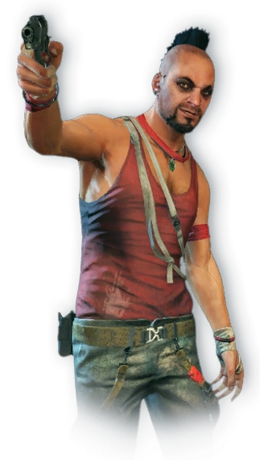
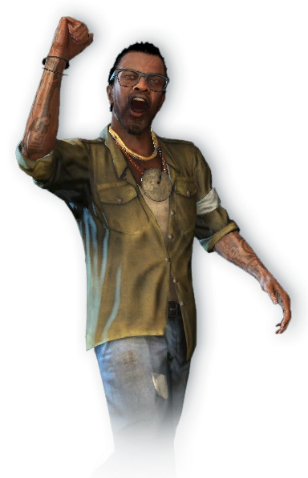
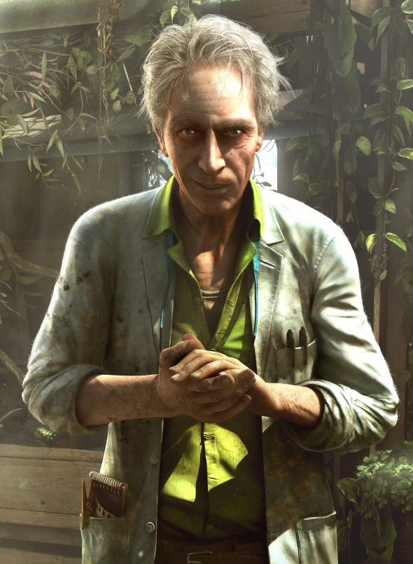
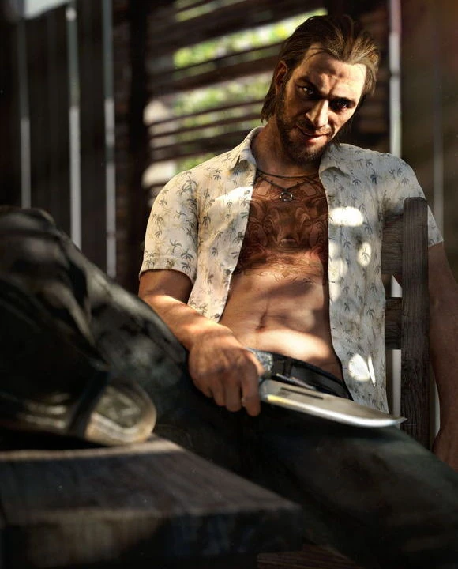
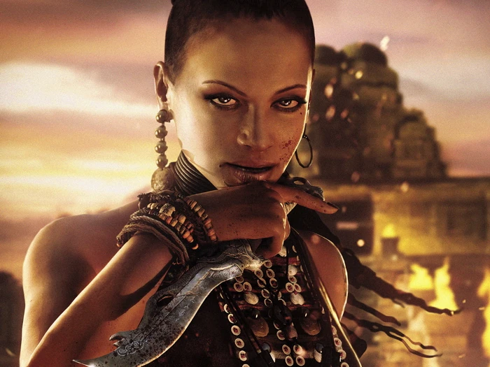
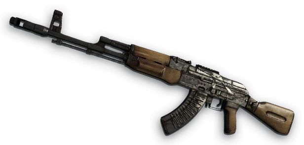
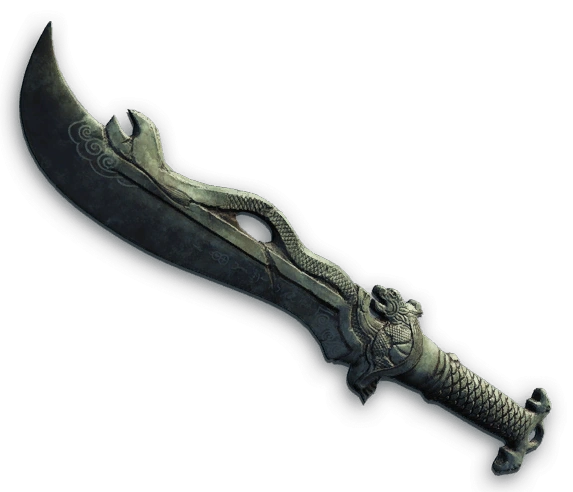

A Cinematic Interactive Walkthrough

"Have I ever told you the definition of insanity?"
Did I ever tell you the definition of insanity?
Insanity is doing the exact same thing over and over again, expecting things to change.
I've killed people. I've stolen things. I've done... bad things.
Jason Brody, a young American on a tropical vacation with his friends, falls into the hands of Vaas Montenegro — a psychopathic pirate who rules the Rook Islands through fear. Thrown into a cage, Jason watches helplessly as his brother Grant is murdered before his eyes. This is where the nightmare begins.

"The warrior's journey begins with ink and blood."
Rescued by Dennis Rogers — a member of the native Rakyat resistance — Jason learns that the islands hold ancient secrets. The Rakyat believe in the power of the Tatau: a mystical tattoo that grants the wearer the strength of a warrior. With every kill, every trial, the ink spreads across Jason's skin. He becomes something more than a tourist. He becomes a weapon.
The tatau will protect you. It will make you strong. But you must prove yourself worthy.
You are not the same man who landed on these islands, Jason. That man is dead.


"The island breeds madness."
I want to see what's inside your head, Jason. Let me cut it open.
The mushrooms... they show you the truth. The truth is that we are all just meat and electricity.
I want that knife, Jason. And I'm going to enjoy taking it from you.
Pain is the only honest thing in the world. Everything else is a lie.

"Embrace the madness, Jason."
Citra Talugmai — the spiritual leader of the Rakyat — sees something in Jason that no one else does. She whispers promises of power, of purpose, of belonging. But her intentions are far from pure. She manipulates Jason's transformation, feeding his rage and his hunger for violence, molding him into the ultimate weapon for her own designs.
You are the warrior we have been waiting for, Jason. The blood of your enemies will write your legend.
Your friends are weak. They hold you back. Let them go. Become what you were meant to be.
I have seen the future, Jason. You stand at the center of it. Or you burn with the rest of them.
"Let's play a game, Jason."
Hoyt Volker — Vaas's boss and the true power behind the pirates — runs a human trafficking empire from the southern island. Cold, calculating, and ruthless, Hoyt sees people as commodities. Jason infiltrates his operation and finds himself at a poker table where the stakes are life and death.
You think you're special, Jason? You think you're the first man who walked onto my island thinking he could take what's mine?
In the end, we all pay for our sins. The question is: are you willing to pay the price?
"Every weapon tells a story. Every scar is a chapter."

The unreliable workhorse of the Rook Islands. Every pirate carries one. It's loud, it's brutal, and it gets the job done — when it doesn't jam. Jason's first real weapon. The tool that turned a tourist into a killer.

Forged from fallen iron and blessed by the island's ancient spirits, this dagger is the soul of the Rakyat tribe made steel. Passed down through generations of warrior-priests, the Dragon Knife is said to be the key to the hidden temple — the very heart of the island's power. It is a symbol of strength, a covenant of blood, and the only weapon that can unlock the secrets of the ancients. Citra placed it in Jason's hands as a sacred oath: prove yourself worthy, and the island will bow to you. Buck Hughes would burn the jungle to the ground to possess it. The blade remembers every life it has taken. And it hungers for more.
"The island keeps its secrets buried deep."
Beneath the lush canopy of the Rook Islands lie the skeletal remains of a forgotten war. Japanese bunkers, rusting artillery, and aircraft wrecks from World War II are scattered across the jungle like tombstones. The Rakyat speak of hidden caves filled with gold, ancient relics, and the treasures of an empire that refused to surrender — even in death.
Jason discovered these secrets not through maps, but through blood — following the trails of those who came before him, carving a path through history itself with every trigger pulled. Every cave holds a story. Every wreck hides a truth. The island does not give up its treasures willingly. You have to earn them. You have to bleed for them.
They say there are tunnels beneath the volcano. Tunnels that lead to a vault that hasn't been opened since 1944. The Japanese called it "The Emperor's Gift." The Rakyat call it the death that sleeps. Jason calls it his only way home.
Ceremonial armor left behind by an officer who went mad in the jungle. Said to be haunted by the spirit of its former wearer.
Stolen from the mainland and hidden in the dark caves beneath the volcano. Enough to buy an army. Enough to start a war.
Unsent letters from soldiers who never made it home. Love, fear, and madness written on yellowed paper. Their final words.
"Every story has an ending."
Jason stands at the crossroads of his own humanity. The island has changed him — forged him into a killer, a warrior, a monster. His friends wait to be saved. Citra waits to claim him. There is no right answer. Only consequences.
Return to the world you came from. Leave the island behind. But can you ever truly leave?
Hover to choose this pathEmbrace the madness. Become the king of the Rakyat. Rule the islands in blood and fire.
Hover to choose this path"Far Cry 3 — A masterpiece of madness, freedom, and the choices that define us."
Project Development & Design
Ali
GSAP Animation Engineering
Ali
Responsive Architecture
Ali
Story Adaptation
Ali
Quality Assurance
Ali
Thank You for Playing
"The island is not done with you yet."
Relive the moment?
Make Another Choice